🥤 DrinksItalok
Chinese teas, Japanese marble sodas, fruit drinks and more. Most of what you see here isn't sold anywhere else in Eger. Everything is explained below.
Kínai teák, japán golyós szódák, gyümölcsitalok és más. A legtöbb, amit itt látsz, máshol nem kapható Egerben. Minden alább el van magyarázva.
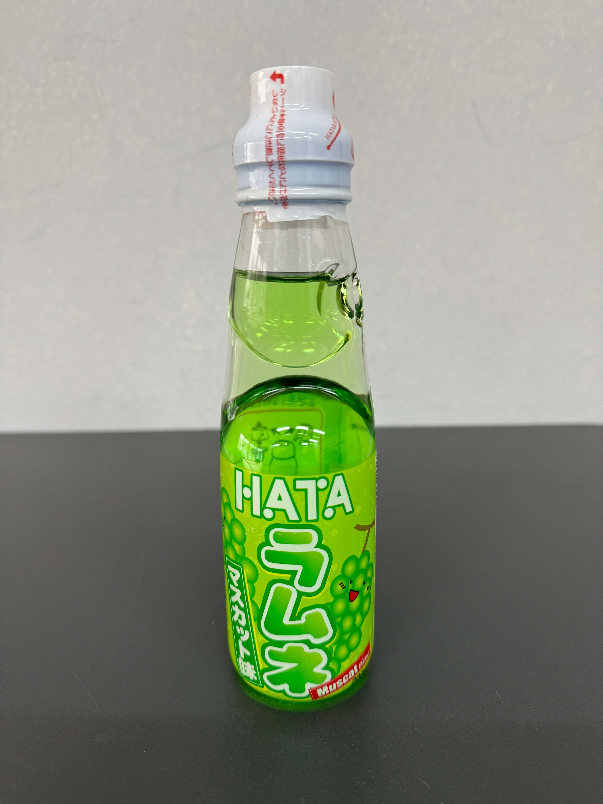
Sealed with a glass marble — push it down to open, it stays inside while you drink. Crisp muscat grape flavour. The bottle itself is the experience.
Üveggolyóval lezárva — nyomja le a kinyitáshoz, bent marad ivás közben. Friss muskotály szőlő íz. Az üveg maga az élmény.
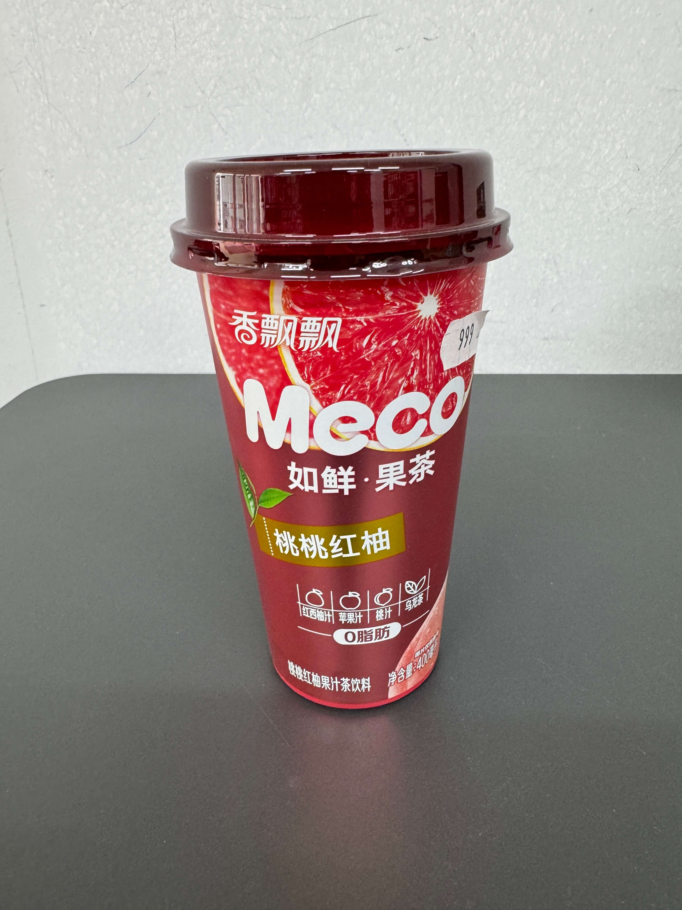
Fruit tea in a to-go cup. Red grapefruit + apple + peach with tea. Citrusy, bright, zero fat. Ready to drink with straw.
Gyümölcstea elvitelre pohárban. Piros grapefruit + alma + barack teával. Citrusos, élénk, nulla zsír.
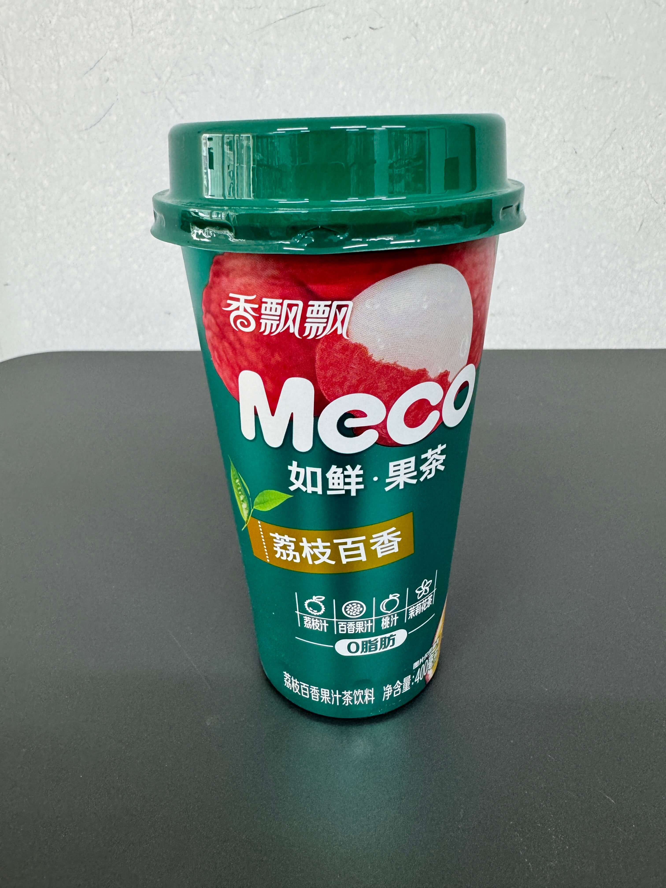
Lychee + passion fruit + peach with tea. Tropical and floral. Lychee is almost unknown in Hungary — a great way to taste it.
Licsi + maracuja + barack teával. Trópusi és virágos. A licsi Magyarországon szinte ismeretlen — remek módja a megkóstolásnak.
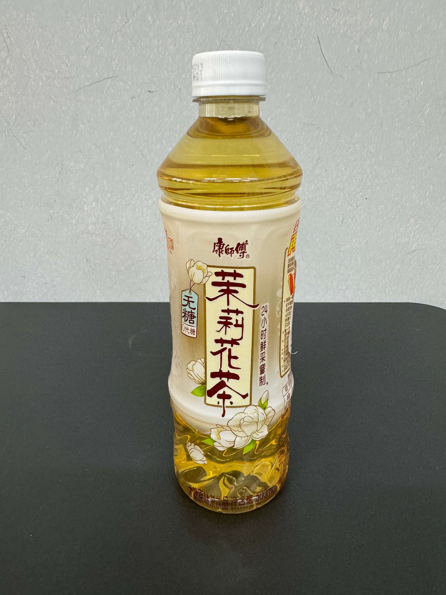
Green tea brewed with real jasmine flowers. Light, floral, clean. One of the most popular daily drinks in China.
Valódi jázmin virágokkal főzött zöld tea. Könnyű, virágos, tiszta. Kína egyik legnépszerűbb mindennapos itala.
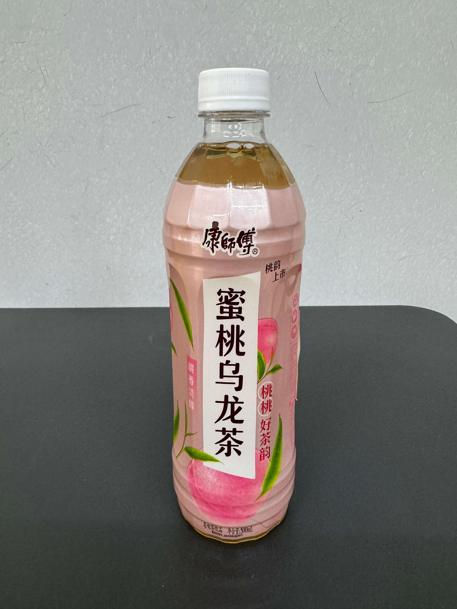
White peach with oolong — semi-fermented tea, naturally smooth and slightly floral. Light pink colour.
Fehér barack oolong teával — félig fermentált tea, természetesen sima és enyhén virágos. Halvány rózsaszín.
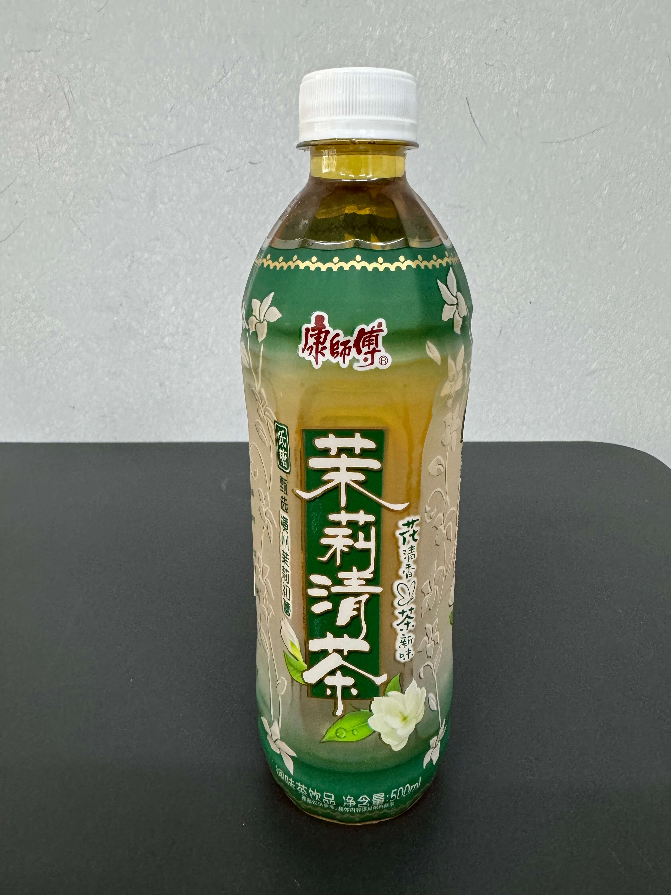
China's best-selling bottled tea. Lightly sweetened jasmine green tea — floral, clean, endlessly refreshing.
Kína legjobban fogyó palackos teája. Enyhén édesített jázmin zöld tea — virágos, tiszta, végtelenül frissítő.
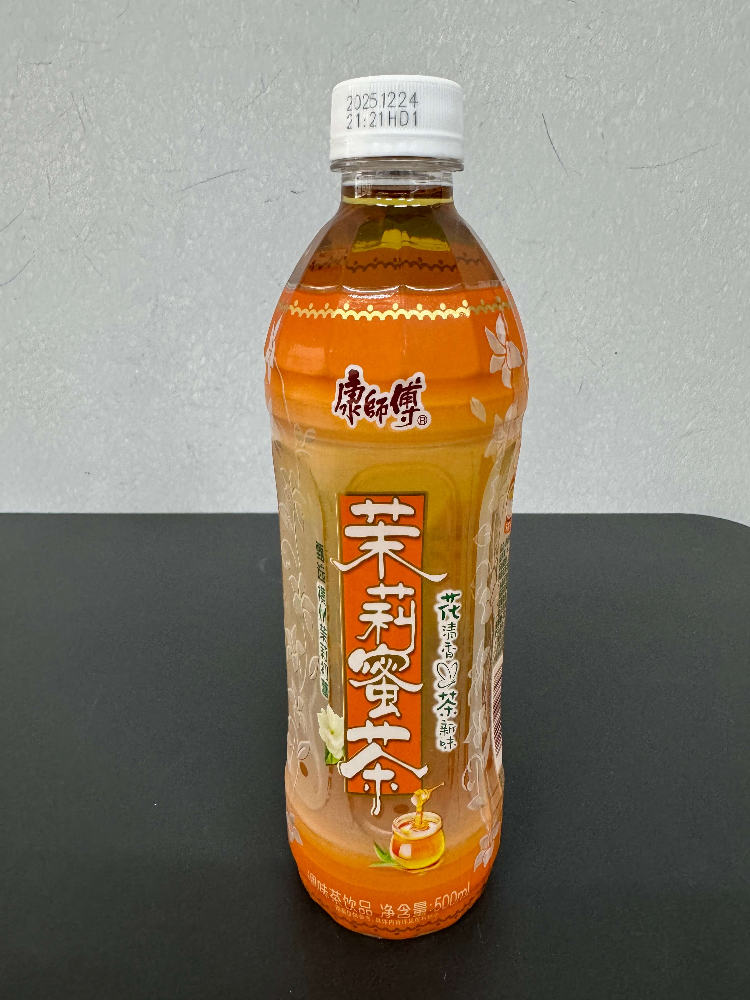
Jasmine tea with honey. Warm, floral, gently sweet. Very comforting.
Jázmin tea mézzel. Meleg, virágos, enyhén édes. Nagyon megnyugtató.
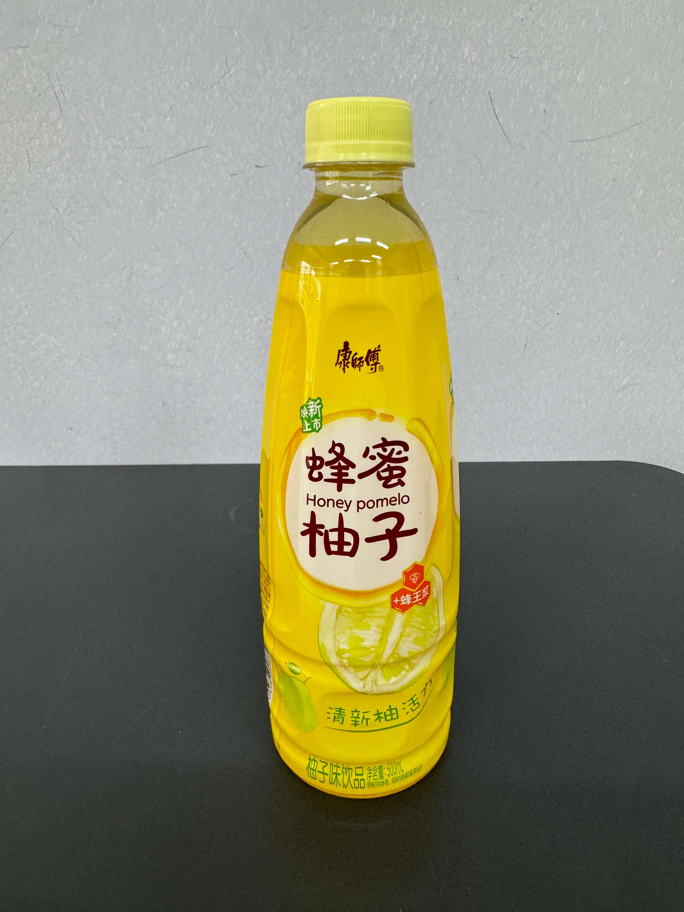
Pomelo is like grapefruit but sweeter, less bitter. Blended with honey — bright and citrusy. No tea inside, just fruit and honey.
A pomelo olyan, mint a grapefruit, de édesebb, kevésbé keserű. Mézzel keverve — élénk és citrusos. Nincs tea, csak gyümölcs és méz.
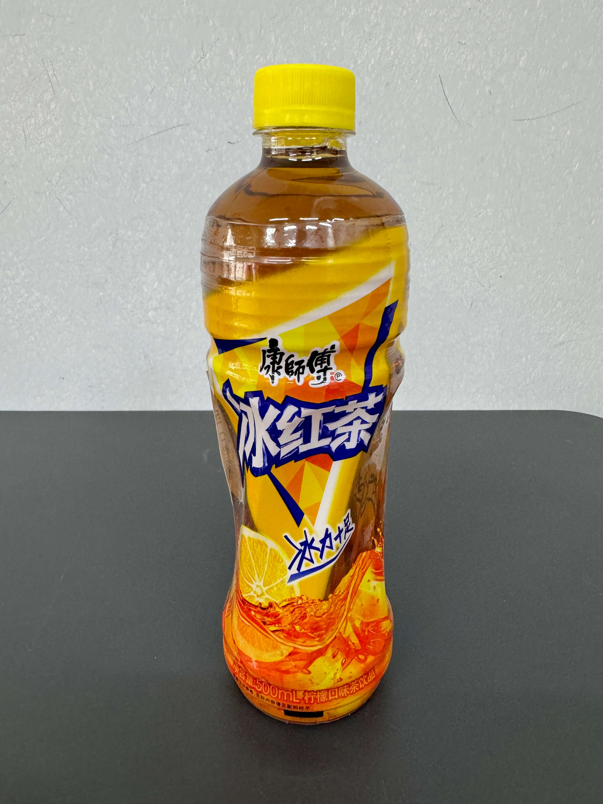
China's best-selling iced tea since 1993. Bold black tea with bright lemon. Sweeter and stronger than European iced teas.
Kína legjobban fogyó jeges teája 1993 óta. Karakteres fekete tea élénk citrommal. Édesebb és erősebb az európai jeges teáknál.
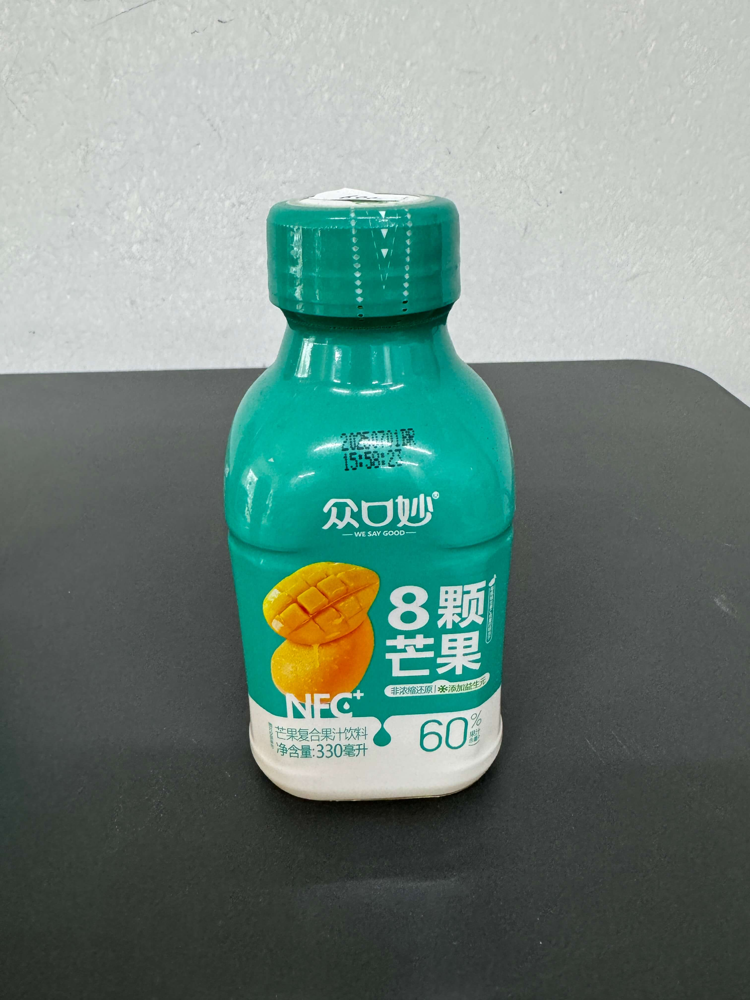
Not from concentrate — pressed straight from real mangoes. 60% mango content with probiotics. Pulpy, thick and genuinely fruity.
Nem töményítményből — közvetlenül valódi mangókból sajtolva. 60% mangó tartalom probiotikumokkal. Rostos, sűrű és valóban gyümölcsös.

The iconic red can. Sterilised creamy milk — sweeter and richer than regular milk. A childhood icon across all of Asia.
Az ikonikus piros doboz. Sterilizált krémes tej — édesebb és gazdagabb a normál tejnél. Gyermekkori ikon egész Ázsiában.
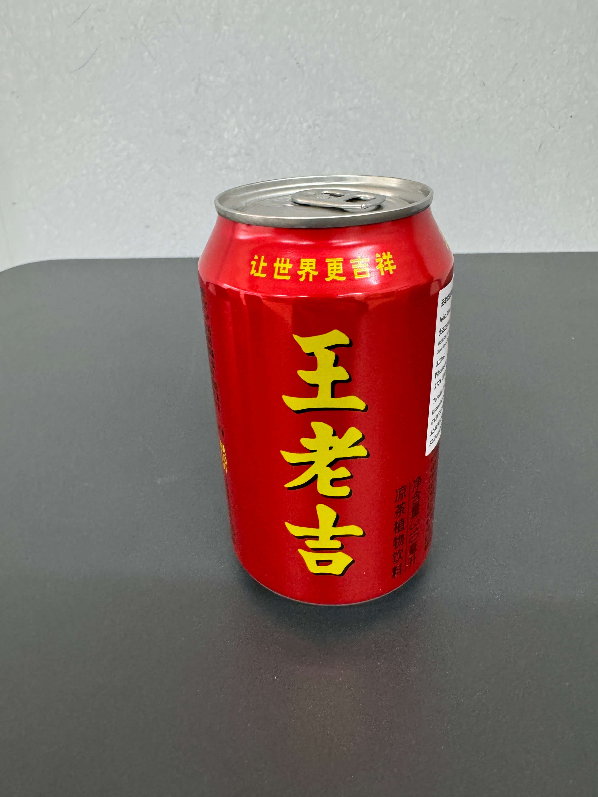
China's most famous herbal tea since 1828. Chrysanthemum, honeysuckle and other herbs. Slightly bitter, lightly sweet. Nothing like European herbal teas.
Kína leghíresebb gyógynövény teája 1828 óta. Krizantém, lonc és más gyógynövények. Enyhén keserű, könnyedén édes. Semmi sem hasonlít az európai gyógynövény teákhoz.
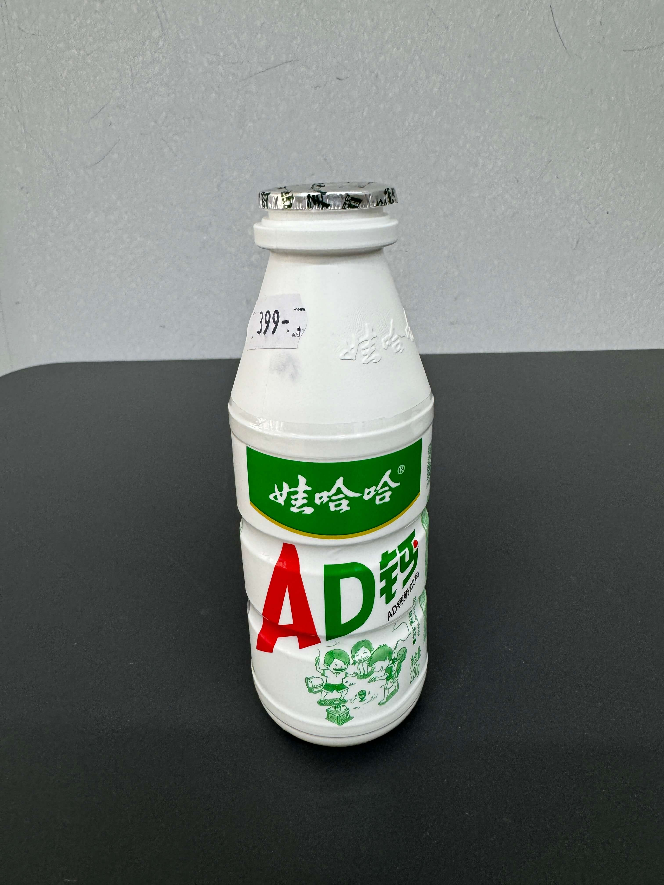
China's most famous children's milk drink. Iconic white bottle. Lightly sweet, creamy, with vitamins A and D. Adults love it too.
Kína leghíresebb gyermekes tejitala. Ikonikus fehér üveg. Enyhén édes, krémes, A és D vitaminokkal. A felnőttek is imádják.
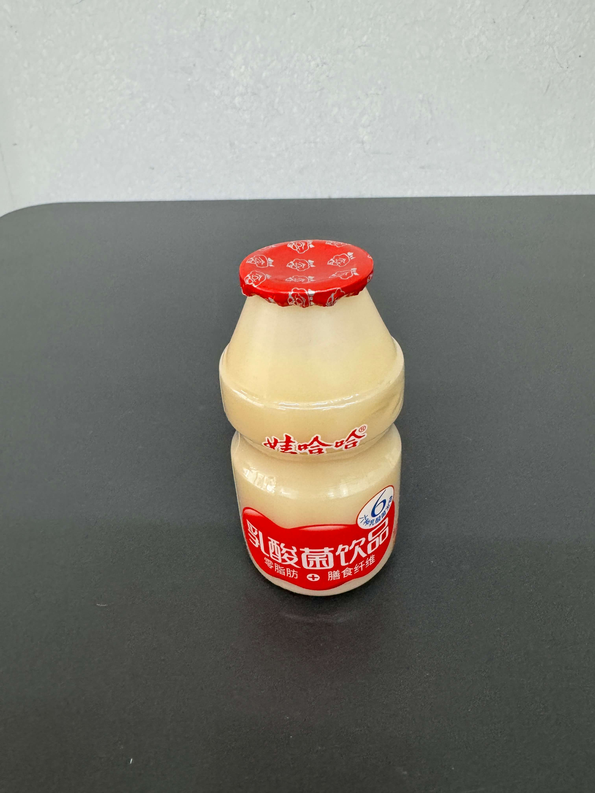
Drinkable yoghurt in Wahaha's hourglass bottle. Zero fat, live bacteria. Gently tangy and smooth. Like Yakult, but Chinese.
Iható joghurt Wahaha homokóra üvegében. Nulla zsír, élő baktériumok. Enyhén savanykás és sima. Mint a Yakult, de kínai.
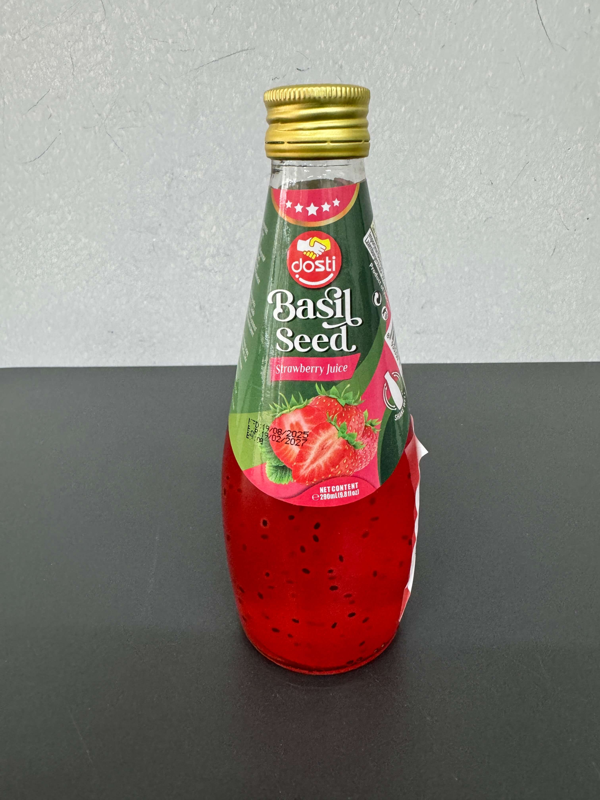
Strawberry juice with basil seeds inside. Seeds swell into tiny jelly pearls — you drink and eat at the same time. Nothing like this in Europe.
Eper lé bazsalikom magokkal. A magok apró zselés gyöngyökké duzzadnak — egyszerre iszol és eszel. Ilyen Európában nem létezik.
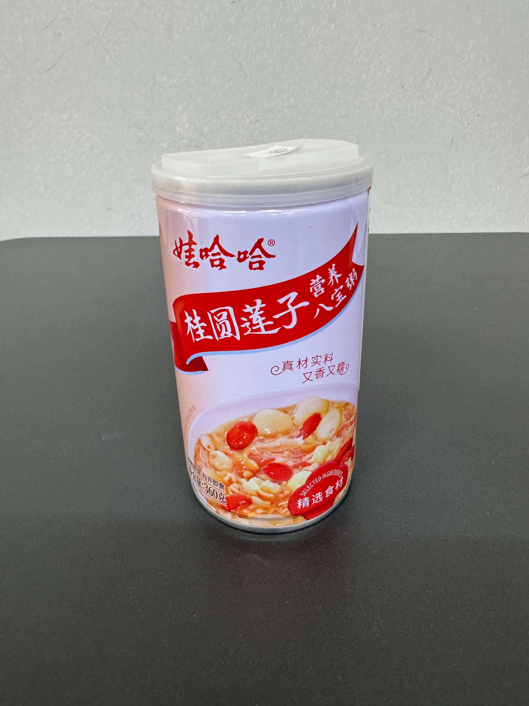
Not a drink — a ready-to-eat sweet rice porridge in a can. Longan fruit, lotus seeds, red beans and glutinous rice in sweet syrup. Open and eat directly.
Nem ital — dobozban lévő édes rizskása. Longán gyümölcs, lótuszmagok, vörös bab és ragadós rizs édes szirupban. Nyisd ki és edd egyenesen.